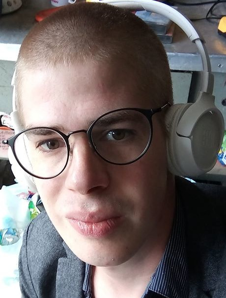

Mathieu bourlard
Belge,célibataire
né le 1er janvier 1994, à Chimay
Rue Saint-Laurent, 75/2
4000 Liège
mathieubourlard01@gmail.com
0493/75.58.39Junior web developperformations:
2017:
2012-2016:
2012(C.E.S.S.):
2009-2010:
2006-2009:
Dessinateur en construction, Construform Grâce-Hollogne (réussite)
Bachelier en architecture, Ulg
Technicien en infographie, IND Beauraing
Arts appliqués, IND Beauraing- C.E.S.S.
Sciences économiques, IND Beauraing
expériences:
janvier-avril 2019:
juillet-octobre 2018:
décembre 2017:
été 2011-2012-2013-2015-2016:
2014:
2013:
2012:
2010:
2009:
réaménagement d'un magasin: Brico Beauraing
ouvrier de manutention: Atelier protégé de Beauraing(intérim)
concepteur en imagerie 3D
.
entretien des espaces verts: Chimay S.A.
ouvrier polyvalent: Abbaye de scourmont
Manoeuvre industriel et ouvrier de maintenance: Gerresheimer S.A.
Garçon de table au restaurant: l'Aquarium, Domaine provincial de Chevetogne
Manoeuvre industriel: Gerresheimer S.A.
Manoeuvre polyvalent: Chimay S.A. Service fût: Chimay S.A. Service exportation: Chimay S.A.
Centres d'intérêts
je suis passionné par l'art en général et les processus de création autant en art que dans le terme du quantique.